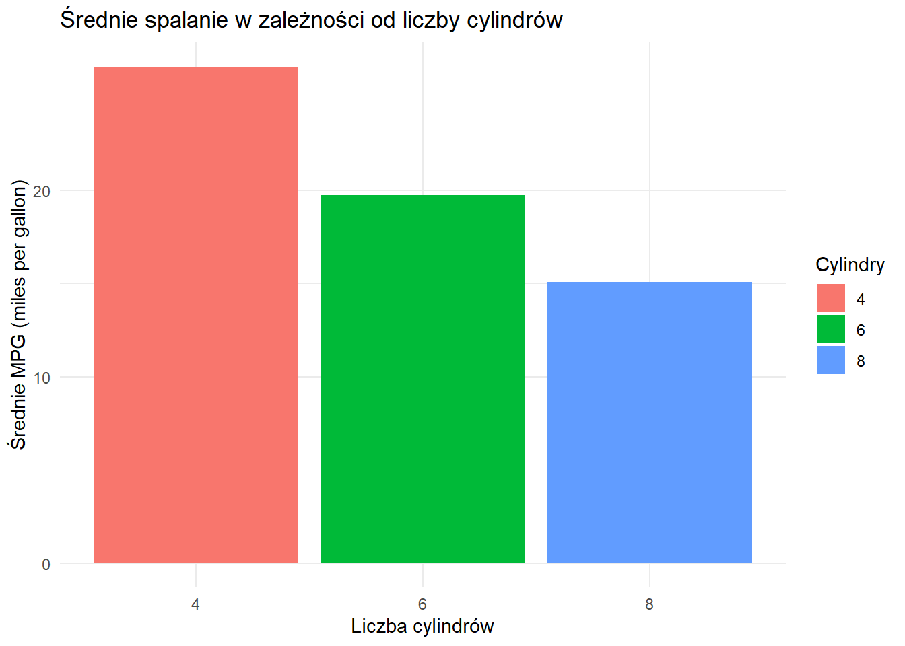
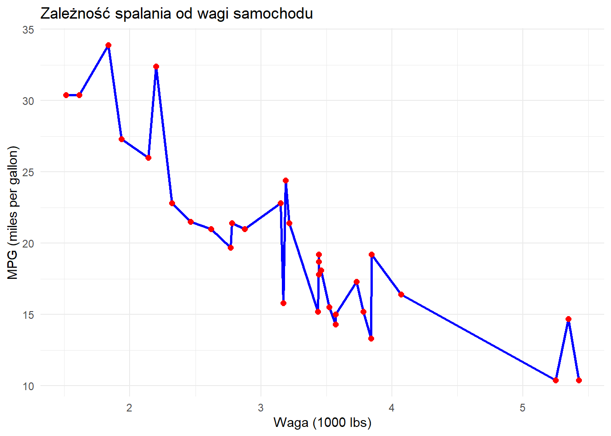
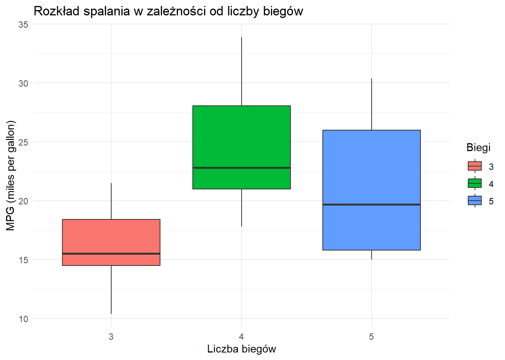

Last updated: 2026-01-18
Checks: 7 0
Knit directory: Projekt_programowanie_R2/
This reproducible R Markdown analysis was created with workflowr (version 1.7.2). The Checks tab describes the reproducibility checks that were applied when the results were created. The Past versions tab lists the development history.
Great! Since the R Markdown file has been committed to the Git repository, you know the exact version of the code that produced these results.
Great job! The global environment was empty. Objects defined in the global environment can affect the analysis in your R Markdown file in unknown ways. For reproduciblity it’s best to always run the code in an empty environment.
The command set.seed(20260117) was run prior to running
the code in the R Markdown file. Setting a seed ensures that any results
that rely on randomness, e.g. subsampling or permutations, are
reproducible.
Great job! Recording the operating system, R version, and package versions is critical for reproducibility.
Nice! There were no cached chunks for this analysis, so you can be confident that you successfully produced the results during this run.
Great job! Using relative paths to the files within your workflowr project makes it easier to run your code on other machines.
Great! You are using Git for version control. Tracking code development and connecting the code version to the results is critical for reproducibility.
The results in this page were generated with repository version f54f67c. See the Past versions tab to see a history of the changes made to the R Markdown and HTML files.
Note that you need to be careful to ensure that all relevant files for
the analysis have been committed to Git prior to generating the results
(you can use wflow_publish or
wflow_git_commit). workflowr only checks the R Markdown
file, but you know if there are other scripts or data files that it
depends on. Below is the status of the Git repository when the results
were generated:
Ignored files:
Ignored: .DS_Store
Ignored: .Rhistory
Ignored: .Rproj.user/
Ignored: analysis/.DS_Store
Untracked files:
Untracked: ._.DS_Store
Untracked: ._.Rhistory
Untracked: ._Projekt_programowanie_R.Rproj
Untracked: analysis/._.DS_Store
Untracked: analysis/._CV.Rmd
Untracked: analysis/._analiza_danych.Rmd
Untracked: analysis/._index.Rmd
Untracked: analysis/._prezentacja.qmd
Untracked: analysis/._prezentacja_files
Untracked: analysis/prezentacja.qmd
Untracked: analysis/prezentacja_files/
Note that any generated files, e.g. HTML, png, CSS, etc., are not included in this status report because it is ok for generated content to have uncommitted changes.
These are the previous versions of the repository in which changes were
made to the R Markdown (analysis/analiza_danych.Rmd) and
HTML (docs/analiza_danych.html) files. If you’ve configured
a remote Git repository (see ?wflow_git_remote), click on
the hyperlinks in the table below to view the files as they were in that
past version.
| File | Version | Author | Date | Message |
|---|---|---|---|---|
| html | f54f67c | 98307 | 2026-01-18 | Build site. |
| html | cc2bde8 | 98307 | 2026-01-18 | Build site. |
| html | f8088e9 | 98307 | 2026-01-18 | Build site. |
| html | b51eda1 | 98307 | 2026-01-18 | Build site. |
| Rmd | a48d484 | 98307 | 2026-01-18 | Dodanie CV i analizy danych |
Zbiór danych mtcars (Motor Trend Car Road Tests) zawiera informacje o 32 samochodach z 1974 roku. Dane pochodzą z pakietu datasets w R.
Zmienne w zbiorze: - mpg - spalanie
(miles per gallon) - cyl - liczba cylindrów -
disp - pojemność silnika - hp - moc
(horsepower) - wt - waga (1000 lbs) - i inne…
# biblioteki
library(dplyr)
Dołączanie pakietu: 'dplyr'Następujące obiekty zostały zakryte z 'package:stats':
filter, lagNastępujące obiekty zostały zakryte z 'package:base':
intersect, setdiff, setequal, unionlibrary(ggplot2) #zbiór danych
data(mtcars)
mtcars <- mtcars %>%
mutate(
cyl = as.factor(cyl),
gear = as.factor(gear)
)
# wyswietlenie danych
head(mtcars) mpg cyl disp hp drat wt qsec vs am gear carb
Mazda RX4 21.0 6 160 110 3.90 2.620 16.46 0 1 4 4
Mazda RX4 Wag 21.0 6 160 110 3.90 2.875 17.02 0 1 4 4
Datsun 710 22.8 4 108 93 3.85 2.320 18.61 1 1 4 1
Hornet 4 Drive 21.4 6 258 110 3.08 3.215 19.44 1 0 3 1
Hornet Sportabout 18.7 8 360 175 3.15 3.440 17.02 0 0 3 2
Valiant 18.1 6 225 105 2.76 3.460 20.22 1 0 3 1#statystyki dlanzmiennej mpg - zużycie paliwa
cat("\nSzczegółowe statystyki dla zmiennej 'mpg' (miles per gallon):\n")
Szczegółowe statystyki dla zmiennej 'mpg' (miles per gallon):cat("Średnia:", mean(mtcars$mpg), "\n")Średnia: 20.09062 cat("Minimum:", min(mtcars$mpg), "\n")Minimum: 10.4 cat("Maksimum:", max(mtcars$mpg), "\n")Maksimum: 33.9 cat("Mediana:", median(mtcars$mpg), "\n")Mediana: 19.2 cat("Odchylenie standardowe:", sd(mtcars$mpg), "\n")Odchylenie standardowe: 6.026948 # grupowanie po liczbie cylindrów i obliczanie statystyk
summary_stats <- mtcars %>%
group_by(cyl) %>%
summarise(
mean_mpg = mean(mpg, na.rm = TRUE),
sd_mpg = sd(mpg, na.rm = TRUE),
n = n()
)
# Wyświetl wyniki
summary_stats# A tibble: 3 × 4
cyl mean_mpg sd_mpg n
<fct> <dbl> <dbl> <int>
1 4 26.7 4.51 11
2 6 19.7 1.45 7
3 8 15.1 2.56 14# filtrowanie tylko samochodów o mocy większej niż 100 KM
mtcars_filtered <- mtcars %>%
filter(hp > 100) %>% # filtruj po mocy
mutate(
# Oblicz moc na cylinder (konie mechaniczne na cylinder)
hp_per_cyl = hp / as.numeric(as.character(cyl))
)
# przefiltrowane dane
head(mtcars_filtered) mpg cyl disp hp drat wt qsec vs am gear carb hp_per_cyl
Mazda RX4 21.0 6 160 110 3.90 2.620 16.46 0 1 4 4 18.33333
Mazda RX4 Wag 21.0 6 160 110 3.90 2.875 17.02 0 1 4 4 18.33333
Hornet 4 Drive 21.4 6 258 110 3.08 3.215 19.44 1 0 3 1 18.33333
Hornet Sportabout 18.7 8 360 175 3.15 3.440 17.02 0 0 3 2 21.87500
Valiant 18.1 6 225 105 2.76 3.460 20.22 1 0 3 1 17.50000
Duster 360 14.3 8 360 245 3.21 3.570 15.84 0 0 3 4 30.62500# Wykres słupkowy średniego spalania wg liczby cylindrów
ggplot(mtcars, aes(x = cyl, y = mpg, fill = cyl)) +
stat_summary(geom = "bar", fun = "mean") + # słupki pokazujące średnią
labs(
title = "Średnie spalanie w zależności od liczby cylindrów",
x = "Liczba cylindrów",
y = "Średnie MPG (miles per gallon)",
fill = "Cylindry"
) +
theme_minimal()
| Version | Author | Date |
|---|---|---|
| b51eda1 | 98307 | 2026-01-18 |
# KOMENTARZ: Wykres pokazuje, że samochody z mniejszą liczbą cylindrów
# (4 cyl) mają najgorsze średnie spalanie (~26 MPG), podczas gdy
# samochody z 8 cylindrami mają najlepsze spalanie (~15 MPG).mtcars_ordered <- mtcars[order(mtcars$wt), ]
#wykres wagi od spalania
ggplot(mtcars_ordered, aes(x = wt, y = mpg)) +
geom_line(color = "blue", linewidth = 1) +
geom_point(color = "red", size = 2) +
labs(
title = "Zależność spalania od wagi samochodu",
x = "Waga (1000 lbs)",
y = "MPG (miles per gallon)"
) +
theme_minimal()
| Version | Author | Date |
|---|---|---|
| b51eda1 | 98307 | 2026-01-18 |
# KOMENTARZ: Wykres wyraźnie pokazuje ujemną korelację między wagą
# samochodu a jego efektywnością paliwową. Cięższe samochody mają
# większe spalanie.# boxplot spalanie od liczby biegów
ggplot(mtcars, aes(x = gear, y = mpg, fill = gear)) +
geom_boxplot() +
labs(
title = "Rozkład spalania w zależności od liczby biegów",
x = "Liczba biegów",
y = "MPG (miles per gallon)",
fill = "Biegi"
) +
theme_minimal()
| Version | Author | Date |
|---|---|---|
| b51eda1 | 98307 | 2026-01-18 |
# KOMENTARZ: Samochody z 4 biegami mają najwyższą medianę spalania
# (~25 MPG) i najmniejszy rozrzut wartości. Samochody z 3 biegami
# mają najgorsze spalanie i największą zmienność.
sessionInfo()R version 4.5.2 (2025-10-31 ucrt)
Platform: x86_64-w64-mingw32/x64
Running under: Windows 10 x64 (build 19045)
Matrix products: default
LAPACK version 3.12.1
locale:
[1] LC_COLLATE=Polish_Poland.utf8 LC_CTYPE=Polish_Poland.utf8
[3] LC_MONETARY=Polish_Poland.utf8 LC_NUMERIC=C
[5] LC_TIME=Polish_Poland.utf8
time zone: Europe/Warsaw
tzcode source: internal
attached base packages:
[1] stats graphics grDevices utils datasets methods base
other attached packages:
[1] ggplot2_4.0.1 dplyr_1.1.4 workflowr_1.7.2
loaded via a namespace (and not attached):
[1] gtable_0.3.6 jsonlite_2.0.0 compiler_4.5.2 promises_1.5.0
[5] tidyselect_1.2.1 Rcpp_1.1.1 stringr_1.6.0 git2r_0.36.2
[9] callr_3.7.6 later_1.4.5 jquerylib_0.1.4 scales_1.4.0
[13] yaml_2.3.12 fastmap_1.2.0 R6_2.6.1 labeling_0.4.3
[17] generics_0.1.4 knitr_1.51 tibble_3.3.0 rprojroot_2.1.1
[21] RColorBrewer_1.1-3 bslib_0.9.0 pillar_1.11.1 rlang_1.1.7
[25] utf8_1.2.6 cachem_1.1.0 stringi_1.8.7 httpuv_1.6.16
[29] xfun_0.55 S7_0.2.1 getPass_0.2-4 fs_1.6.6
[33] sass_0.4.10 otel_0.2.0 cli_3.6.5 withr_3.0.2
[37] magrittr_2.0.4 ps_1.9.1 grid_4.5.2 digest_0.6.39
[41] processx_3.8.6 rstudioapi_0.18.0 lifecycle_1.0.5 vctrs_0.6.5
[45] evaluate_1.0.5 glue_1.8.0 farver_2.1.2 whisker_0.4.1
[49] rmarkdown_2.30 httr_1.4.7 tools_4.5.2 pkgconfig_2.0.3
[53] htmltools_0.5.9